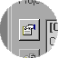

To work on a Web site this file does not need to be compiled. If you compile it (for use in a compiled help file), and want to use the site map format, open your project file, and then click Change Project Options. Click the Compiler tab, and then clear the Create a binary index check box.

Change Project Options
Specifies files, compiler, window, and other project settings.
If you are authoring an index for a Web site, make sure you add the HTML Help ActiveX control to the topic files you want the index to appear in. Specify Index as the command, and then specify the name and location for your index file.
An index compiled using the binary format will not work on a Web site. You can use a site map index for both a Web site and a compiled help file.